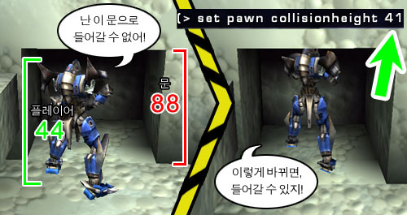
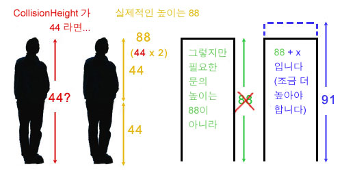

UDN
Search public documentation:
ActorVariablesKR
English Translation
日本語訳
Interested in the Unreal Engine?
Visit the Unreal Technology site.
Looking for jobs and company info?
Check out the Epic games site.
Questions about support via UDN?
Contact the UDN Staff
日本語訳
Interested in the Unreal Engine?
Visit the Unreal Technology site.
Looking for jobs and company info?
Check out the Epic games site.
Questions about support via UDN?
Contact the UDN Staff
Actor 의 변수들
문서 요약: Actor 의 속성에 대한 포괄적인 안내. 문서 변경 내역: 2004년 11월 25일 Michiel Hendriks 최종 업데이트- v3323을 위한 업데이트. 2003년 3월 11일 Chris Linder (DemiurgeStudios?) 에 의해 업데이트 - 충돌 섹션을 고쳐 씀. 원저자는 Tom Lin (DemiurgeStudios?).서론
이 문서에서는 액터의 ‘properties (속성)’ 섹션에 들어있는 값들을 모두 나열합니다. 이 목록에는 각 엔트리의 기본 설정값들도 포함됩니다. 관련 UDN 문서로의 링크또한 제공됩니다. 여기서 제공되는 정보의 상당 부분이 이미 다른 페이지들에도 수록되어 있으므로, 이 문서는 주로 그 페이지들로 연결하는 색인의 기능을 하게 됩니다.Advanced
| 변수 | 설명 | 기본 값 |
|---|---|---|
| bCanTeleport | True 로 설정하면 해당 액터가 텔레포터 액터? 와 함께 텔레포트 됩니다. | False |
| bCollideWhenPlacing | True 로 설정하면 액터가 UnrealEd? 에 배치될 때, 그리고 런타임에 스폰될 때 세계와 충돌합니다. 이 변수의 값이 true 일 경우에는 다른 것들과 충돌하지 않도록 위치를 정하지 않으면 배치에 실패하게 됩니다. | False |
| bDirectional | True 로 설정하면 화살표를 사용하여 편집할 때 액터가 방향을 가리키는 화살표를 표시합니다. | False |
| bEdShouldSnap | True 로 설정하면 에디터에서 액터를 그리드에 스냅합니다. | False |
| bGameRelevant | 이 변수는 기본 값 그대로 두십시오. | |
| bHidden | 런타임에 액터가 숨겨지도록 합니다. 게임을 테스트하는 동안에는 볼 수 있지만 최종적으로는 숨기고 싶은 트리거 같은 것에서 이 값을 토글하면 좋습니다. | False |
| bHiddenEd | True 로 설정하면 편집하는 동안 액터가 숨겨지도록 합니다. 이것을 다시 선택하려면, Search Actors 버튼을 사용해야 합니다. | False |
| bHiddenEdGroup | True 로 설정하면 에디터에서 액터를 숨깁니다. Groups 브라우저를 사용하여 다시 보이게 할 수 있습니다. | False |
| bHighDetail | 이것이 True 로 설정되고, default.ini 파일에서 HighDetailActors 가 역시 True 로 설정된 경우에는 액터가 런타임에만 나타납니다. | False |
| bLockLocation | True 로 설정되었을 때는 에디터에서 액터가 이동하는 것을 방지합니다. | False |
| bMovable | True 일 경우 런타임에 액터가 이동할 수 있습니다. | True |
| bNoDelete | 기본 값으로 남겨 두십시오. | False |
| bShouldBaseAtStartup | 이 값이 True 이고, bCollideWorld 이 True 이며 Physics 가 PHYS_None 이나 PHYS_Rotating 이면, 액터는 그것의 밑에 있는 것을 베이스로 설정합니다. 액터의 "베이스" 는 그것이 첨부되는 대상입니다. 액터의 위치는 새로 설정된 “베이스” 에 상대적으로 고정된 상태로 남습니다. 예를 들면, 이 값이 True 인 이동할 수 있는 조명이 mover 위에 배치되면, 그 mover 가 레벨에서 이리저리 이동함에 따라 조명도 함께 움직이게 됩니다. | False |
| bStasis | 기본 값으로 남겨 두십시오. | False |
| bSuperHighDetail | 이것이 True 이고, default.ini 파일에서 SuperHighDetailActors 또한 True 인 경우 액터는 런타임에만 나타납니다. | False |
| Lifespan | 액터가 삭제되기 전에 몇 초동안 세계에 머무르는지 나타냅니다. 이 값이 0이면 이 객체는 무한 수명을 가진 것으로 간주됩니다. | 0 |
Collision
충돌은 매우 까다로운 주제이며, 많은 변수들이 서로 관계되어 있습니다. 이 섹션에 많은 변수가 있을 뿐만아니라, 엔진의 다른 곳에도 (한 예로 Static Mesh 브라우저) 충돌에 영향을 주는 변수들이 있습니다. 가끔 코드에서 충돌 속성이 설정된 객체들이 UnrealEd 에서 설정된 변수들을 오버라이드한다는 사실은 일을 더욱 복잡하게 만듭니다. 그러므로 아래의 정의를 절대적 사실로서 보다는 안내로서 받아들여 주십시오. 정적 메쉬의 경우에는 충돌의 경고 및 뉘앙스가 아주 상세하게 설명되어 있습니다. 이에 관한 정보는 StaticMesh 충돌의 참조? 를 참고하십시오.| 변수 | 설명 |
|---|---|
| bAutoAlignToTerrain | True 일 경우 액터가 Terrain 에 고정되며, Terrain 에디터를 사용할 때 그 액터는 Terrain 에 부착 및 정렬된 채로 남아있게 됩니다. |
| bBlockActors | False 일 경우, 플레이어가 아닌 액터가 해당 객체를 통해 이동하는 것이 가능해 집니다. 이 값이 True 이고, bBlockNonZeroExtentTraces 및 bCollideWorld 가 모두 TRUE 일 경우에는 해당 객체가 플레이어 아닌 액터들을 차단합니다. |
| bBlockKarma | bBlockKarma 가 False 일 경우에는 해당 객체가 Karma 객체를 차단하지 않습니다. bBlockKarma_가 True 이고 _bCollideWorld 도 True 일 경우, 해당 객체는 Karma 액터와 충돌합니다. |
| bBlockNonZeroExtentTraces | 이것이 False 이면 해당 객체가 비제로 범위 트레이스를 차단하지 않습니다. 비제로 범위 트레이스는 플레이어의 움직임 및 다른 대부분의 액터의 움직임 같은 것들에 대해 사용됩니다. 이 값이 True 이고 bCollideWorld 도 True 인 경우에는, 해당 객체는 비제로 범위 트레이스를 차단합니다. |
| bBlockPlayers | False 일 경우 플레이어 액터들이 해당 객체를 통해 이동하는 것이 가능합니다. 이 값이 True 이고, bBlockNonZeroExtentTraces 및 bCollideWorld 가 모두 TRUE 일 경우에는 해당 객체가 플레이어 액터를 차단합니다. |
| bBlockZeroExtentTraces | False 이면 해당 객체가 제로 범위 트레이스를 차단하지 않습니다. 제로 범위 트레이스는, 즉석 타격 무기 및 로켓 등을 모두 포함하는, 무기 발사 같은 것들에 대해 사용됩니다. 이 값이 True 이고 bCollideWorld 도 True 인 경우, 해당 객체는 제로 범위 트레이스를 차단합니다. |
| bCollideActors | 이것은 충돌에서 가장 중요한 변수입니다. bCollideActors 가 False 일 경우, 해당 액터는 아무것과도 충돌하지 않거나 아무것도 차단하지 않습니다. 액터가 충돌 해시 내에 있지 않게 되기 때문입니다. 이 값이 True 이면 해당 액터가 다른 액터들과 “충돌” 합니다. "충돌" 은 엔진이 두 객체의 접촉을 계산할 것이라는 것을 뜻합니다. 예를 들면, Triggers 에는 이것이 True 로 설정되어 있습니다. 여러분이 트리거와 접촉하지만 트리거에 의해 차단되어 있지는 않다는 것을 엔진이 알아야 하기 때문입니다. 해당 액터가 다른 액터를 차단하게 하고 싶다면, 무엇을 차단할 것인지에 따라 이 섹션에서 설명한 다른 변수들과 함께 반드시 bCollideActors 를 True 로 설정해야 합니다. |
| bCollideWorld | 액터가 세계와 충돌할 것인지의 여부를 결정합니다. 세계에서 액터가 떨어지고 있는데 그것을 막고 싶다면 bCollideWorld 를 True 로 설정하십시오. |
| bPathColliding | bBlockActors 와 bCollideActors 가 True 이고 bStatic 이 False 일 경우, bPathColliding 을 False 로 설정하면 경로 구축중에는 해당 액터가 충돌하지 않습니다. 이것은 AI 들이 해당 액터를 통해 이동할 수 없는 경우에도 이동할 수 있다고 생각한다는 것을 의미합니다. bPathColliding 을 True 로 하는 것은 AI 들이 이 액터를 통해 이동하는 것이 가능한 경우 이 액터를 통해 경로를 찾는 것을 방지하지는 않습니다. 이 설정은 mover 나 다른 액터들이 AI 가 그들을 통해 이동하려고 할 때 피하도록 하는데 유용합니다. |
| bProjTarget | False 일 경우 무기 발사가 해당 액터를 통과합니다. 이것은 즉석 타격 무기 및 로켓 같은 것에 모두 해당됩니다. bProjTarget 가 True 이고, bBlockZeroExtentTraces 와 bCollideWorld 가 모두 TRUE 이면 이 액터는 무기 발사를 차단합니다. |
| bUseCylinderCollision | True 일 경우, 엔진은 Karma 충돌을 제외한 모든 충돌에서 해당 액터에 대해 (CollisionRadius 와 CollisionHeight 에 의해 정의된) 실린더 충돌을 사용합니다. bUseCylinderCollision 이 False 일 경우, 해당 액터는 다른 것들과 충돌하기 위해 삼각형별 정적 메쉬 충돌 등 다른 종류의 충돌에 의존해야 합니다. |
| CollisionHeight | 이 값은 액터의 전체 높이의 절반입니다. |
| CollisionRadius | 이 값은 실린더식 충돌 볼륨의 반경입니다. |
충돌 높이와 문의 높이
CollisionHeight (위의 표 참고) 는 재미있는 변수입니다. 이 필드에 여러분이 입력하는 높이는 액터가 실제로 얻게되는 높이가 아닙니다. 액터가 얻는 것은 이 높이의 딱 절반입니다. 그렇지만 이것이 액터가 그것과 정확히 높이가 같은 문으로 들어갈 수 있다는 뜻은아닙니다. 따라서 액터의 높이가 44 이고, 문의 높이가 88 이라면 다음과 같은 문제에 부딪치게 됩니다:
그러므로 레벨을 작성할 때는 collisionheight 가 두 배가 되어야 하며, 액터의 실제 충돌 크기에 근접하기 위해 두 배 보다 약간 더 늘려야 한다는 것을 염두에 두십시오.
Display
| 변수 | 설명 | 기본 값 |
|---|---|---|
| AmbientGlow | 액터가 얼마나 밝게 보이는지를 0-255 범위로 제어합니다. 표면의 조명 페이지의 예들을 참고하십시오. | 0 |
| AntiPortal | 이 필드는 기본 값으로 남겨 두십시오. | None |
| bAcceptsProjectors | 프로젝터가 액터에게 영향을 줄것인지의 여부를 결정합니다. | True |
| bAlwaysFaceCamera | 액터가 스프라이트처럼 언제나 카메라를 대하는 것으로 렌더됩니다. 정점 메쉬에 한합니다. | False |
| bDeferRendering | DrawType?이 DT_Particle 이거나 Style 이 STY_Additive 일 경우 렌더링을 뒤로 미룹니다. | True |
| bDisableSorting | 이것이 True 로 설정되어 있으면 엔진이 액터 삼각형들을 정렬하지 않습니다 (예를 들어, 알파 채널 삼각형들에 대해서). | False |
| bShadowCast | 액터가 정적 그림자를 드리울 것인지의 여부를 결정합니다 (SunLight 액터에 의해 드리워진 그림자 등). | False |
| bStaticLighting | 이 값이 True 이면 엔진은 해당 액터에 미리 계산된 조명을 사용합니다. 액터상의 조명은 액터 자체가 움직여도 변하지 않습니다. 일반적으로 이 변수에 대해서는 기본 값을 그대로 두는 것이 좋습니다. | False |
| bUnlit | True 일 경우 조명이 액터에게 영향을 주지 않으며 액터는 완전 밝기로 보입니다. | False |
| bUseDynamicLights | 이것이 True 이면 액터가 동적 조명을 받을 수 있게 됩니다. 액터가 정적 및 동적 조명을 동시에 받도록 하는 것이 가능합니다. | True |
| bUseLightingFromBase | 액터가 첨부되어 있는 곳의 Unlit/AmbientGlow 값을 끌어내 그 액터 자체에 적용합니다. | False |
| CullDistance | 액터가 언제 컬되는지 결정합니다. 이 값이 0이면 거리 컬링이 없게 됩니다. 값이 0보다 클 경우에는 그 거리에서 컬됩니다. 마이너스 값은 작용하지 않는 것 같습니다. | 0 |
| DrawScale | 액터의 크기를 제어합니다. | 1.0 |
| DrawScale3D | 액터의 크기를 균등하지 않게 조정하는데 사용됩니다. | (1.0, 1.0, 1.0) |
| DrawType | 엔진이 사용하는 그리기 효과를 나타냅니다. 이 값을 변경해서는 안됩니다. 사실, 이 값을 변경하면 에디터 윈도우가 크래시될 수 있습니다. | 액터에 따라 다름 |
| ForcedVisibilityZoneTag | 가시성 코드가 액터를 주어진 태그의 영역 내에 있는 것처럼 처리하도록 합니다. | None |
| LODBias | 뼈대 및 정점이 애니메이트된 메쉬에 의해 사용되고 있는 LOD 를 스케일하는데 쓰입니다. 이 값은 사용될 LOD의 승수입니다. LOD 레벨 2 를 사용하려고 하는 메쉬에 LODBias 값 2.0 을 적용하면 그 메쉬는 LOD 레벨 4 를 사용하게 됩니다. 자세한 정보는 AnimBrowser 참조 문서의 LOD 섹션? 을 참고하십시오. | 1.0 |
| MaxLights | 해당 액터에게 영향을 미치는 동적 조명의 한계. | 4 |
| Mesh | 액터 대신에 뼈대 및 정점이 애니메이트된 메쉬를 사용할 수 있도록 합니다. 이것을 사용할 때는 DrawType 을 DT_Mesh 로 바꿔야 합니다. | None |
| OverlayMaterial | 스킨에서 사용할 쉐이더/소재 효과입니다 (뼈대 메쉬에 한함). | None |
| PrePivot | 주어진 피벗 포인트로부터 액터를 오프셋할 수 있는 값들입니다. | (0.0, 0.0, 0.0) |
| ScaleGlow | 정적 메쉬 및 코로나에서 밝기를 변경할 수 있도록 합니다. 변경을 확인하려면 조명을 재빌드하십시오. | 1.0 |
| Skins | 이곳에서 메쉬에 텍스처를 재배정할 수 있습니다. 자세한 정보는 워크플로와 모듈 방식 문서를 참고하십시오. | ... |
| StaticMesh | 해당 액터 대신 StaticMesh 를 사용할 수 있도록 합니다. 이것이 에미터 등 모든 액터에 대해 작용하지는 않습니다. 이 옵션을 사용할 경우에는 DrawType 을 DT_StaticMesh 로 설정하십시오. | None |
| Style | 스프라이트 및 메쉬의 렌더링 스타일을 정의합니다. 일반적으로 기본 설정을 사용하는 것이 가장 좋습니다. | STY Normal |
| Texture | 어느 텍스처가 스프라이트 액터를 표현할 것인지 제어합니다. | 액터에 따라 다름 |
| UV2Mode | UV2Texture 의 렌더 모드. | UVM MacroTexture |
| UV2Texture | 액터의 스킨에 첨가된 추가 오버레이 (정적 메쉬에 한함). | None |
Events
| 변수 | 설명 | 기본 값 |
|---|---|---|
| Event | 해당 액터가 활성화되거나 트리거 되었을 때 발생하는 이벤트입니다. | None |
| ExcludeTag[8] | 조명, 프로젝터, 액터의 렌더링, 날씨 차단 등을 제외할 때 사용할 수 있는, 다목적 제외 태그입니다. 한 예로, bSpecialLit 인 액터가 동적 조명이 그 액터에 영향력을 가지는지 점검하기 위해 사용합니다. | |
| Tag | 해당 액터의 태그. | None |
Force
| 변수 | 설명 | 기본 값 |
|---|---|---|
| ForceNoise | ForceScale? 에 추가되는 노이즈의 양. 0 = 노이즈 없음, 1 = 최대 노이즈. | 0 |
| ForceRadius | 액터가 입자를 통해 이동할 때, 이 액터가 영향을 미치는 입자의 반경. | 0 |
| ForceScale | 해당 액터가 입자에 대해 가지는 영향력의 스케일. | 0 |
| ForceType | 해당 액터가 입자에 대해 가지는 힘의 유형. FT_None 은 그 액터가 입자 시스템에 영향을 미치지 않아야 한다는 것을 뜻합니다. FT_DragAlong 은 입자가 마치 액터를 통과해 이동하는 것처럼 그 액터 뒤로 가볍게 잡아당겨지도록 합니다. UT2K3 에서 로켓이 지나간 자국에 이 효과가 사용됐습니다. | None |
Karma
| KParams | Karma 참조? 문서에서 설명합니다. |
|---|
LightColor
색상표를 사용해서 값을 설정하거나, Photoshop 에서 재생해보고 거기서 Hue, Saturtion, 그리고 Brightness (H S B) 설정을 사용할 수 있습니다.| 변수 | 설명 | 기본 값 |
|---|---|---|
| LightBrightness | 비추어지는 빛의 양을 제어합니다. | 0.0 |
| LightHue | 비추어지는 빛의 색조를 제어합니다. | 0 |
| LightSaturation | 비추어지는 빛의 채도를 제어합니다. | 0 |
Lighting
| 변수 | 설명 | 기본 값 |
|---|---|---|
| bActorShadows | True 일 경우에는 액터가 그림자를 던집니다. | False |
| bAttenByLife | 수명이 감소함에 따라 약해지는 조명. | False |
| bCorona | 조명이 Skins 을 코로나로서 사용합니다. | False |
| bDirectionalCorona | bCorona 가 true 일 경우, 코로나가 사용자를 향하고 있으면 이것을 크게 만듭니다. 90 도 이상의 각도에서는 0 으로 합니다. | False |
| bDynamicLight | True 일 경우 해당 광원으로부터의 조명이 광원과 함께 움직일 수 있도록 합니다. DynamicLight 은 보통의 광원보다 좀더 프로세서 집약적이라는 점을 유념하십시오. | False |
| bLightingVisibility | 라인 점검으로 해당 액터의 조명 가시성을 계산합니다. | True |
| bSpecialLit | 조명의 참조 문서의 설명을 참고하십시오. | False |
| LightCone | 조명의 참조 문서의 설명을 참고하십시오. | 0 |
| LightEffect | 조명의 참조 문서의 설명을 참고하십시오. | LE None |
| LightPeriod | 조명의 참조 문서의 설명을 참고하십시오. | 0 |
| LightPhase | 조명의 참조 문서의 설명을 참고하십시오. | 0 |
| LightRadius | 조명의 실제 반경의 승수입니다. | 0.0 |
| LightType | 조명의 참조 문서의 설명을 참고하십시오. | LT None |
Movement
| 변수 | 설명 | 기본 값 |
|---|---|---|
| AttachTag | 해당 액터와 함께 이동하기 원하는 다른 액터의 Tag 를 입력할 수 있는 필드입니다. 이것은 이동할 수 있는 액터 (Emitter, Mover, 또는 MoveableLights 등) 에 대해서만 작용합니다. | None |
| bBounce | 액터가 움직여서 다른 객체에 부딪치면 그 액터가 튕겨지게 합니다. 이 변수는 복잡한 Karma 물리를 처리하지 않고, 단지 기본적으로 튀게 할 뿐입니다. | False |
| bFixedRotationDir | 회전이 항상 같은 방향이 되도록 결정합니다. 예를 들어 항상 X축을 중심으로 시계방향으로 회전하기 등입니다. | False |
| bHardAttach | 액터의 회전 및 위치를 결정합니다. 이 변수의 값이 false 이면 액터는 자신이 첨부되어 있는 것과 함께 회전하기 보다는 단지 그것을 따라갈 뿐입니다. 이 때는 bBlockActor 과 bBlockPlayer 도 반드시 false 여야 합니다. | False |
| bIgnoreEncroachers | 이 값을 true 로 설정하면 엔진은 mover 와 해당 액터 사이의 충돌을 무시합니다. 그밖에, 더킹이나 점핑의 트레이스 및 점검 등 다른 사소한 충돌이 더 이상 감지되지 않습니다. | False |
| bIgnoreTerminalVelocity | PHYS_Falling 에서 PhysicsVolume 의 TerminalVelocity 를 무시합니다. True 일 경우 액터가 계속해서 속력을 높이게 됩니다. | False |
| bOrientToVelocity | 액터를 현재 가속도의 방향으로 회전합니다. | False |
| bRotateToDesired | 액터를 DesiredRotation 으로 회전합니다. (아래 참고) | False |
| Buoyancy | 액터가 물에 뜨는 성질을 말합니다 (예를 들어 WaterVolume 내에 있을 경우). | 0.0 |
| DesiredRotation | bRotateToDesired에서 액터가 이동될 목표 회전. | (0, 0, 0) |
| Location | 액터의 위치. | (0.0, 0.0, 0.0) |
| Mass | 해당 액터의 무리. 이 변수는 유동체 표면 위를 맴돌 때 PHYS_Swimming, PHYS_Falling 그리고 PHYS_Hovering 의 속도에 영향을 미칩니다. 그러나 mover 같은 다른 여러가지 것들에 대해서도 사용됩니다. | 100.0 |
| Physics | 액터의 현재 물리 모드. 여러가지 물리 타입에 대해서는 SetPhysics? 를 참고하십시오. | PHYS None |
| Rotation | 해당 액터의 회전. | (0, 0, 0) |
| RotationRate | 1 초당 회전의 변화. | (0, 0, 0) |
| Velocity | 런타임에 액터가 움직이는 방향으로의 속도. | (0.0, 0.0, 0.0) |
Object
| 변수 | 설명 | 기본 값 |
|---|---|---|
| Group | Groups 브라우저에서 해당 액터가 배정되어 있는 그룹을 가리킵니다. 한 액터가 한 번에 여러 그룹에 있을 수 있습니다. | None |
| InitialState | 이것은 모든 액터에게 적용되는 것은 아닙니다. mover 등의 특정 액터들이 이 필드를 사용합니다. | None |
| Name | Unreal Ed 가 액터에게 배정하는 이름입니다. 이 필드는 변경할 수 없으며, Tag 필드와 다른 것입니다. | None |
Sound
| 변수 | 설명 | 기본 값 |
|---|---|---|
| AmbientSound | 견본 사운드 맵 문서의 설명을 참고하십시오. | None |
| bFullVolume | 견본 사운드 맵 문서의 설명을 참고하십시오. | False |
| SoundOcclusion | 견본 사운드 맵 문서의 설명을 참고하십시오. | OCCLUSION Default |
| SoundPitch | 견본 사운드 맵 문서의 설명을 참고하십시오. | 64 |
| SoundRadius | 견본 사운드 맵 문서의 설명을 참고하십시오. | 64.0 |
| SoundVolume | 견본 사운드 맵 문서의 설명을 참고하십시오. | 128 |
| TransientSoundRadius | 견본 사운드 맵 문서의 설명을 참고하십시오. | 300.0 |
| TransientSoundVolume | 견본 사운드 맵 문서의 설명을 참고하십시오. | 0.3 |